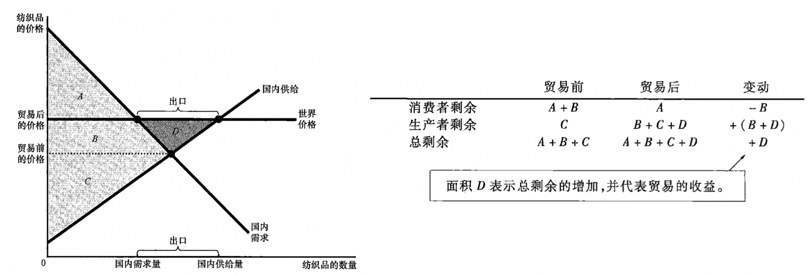
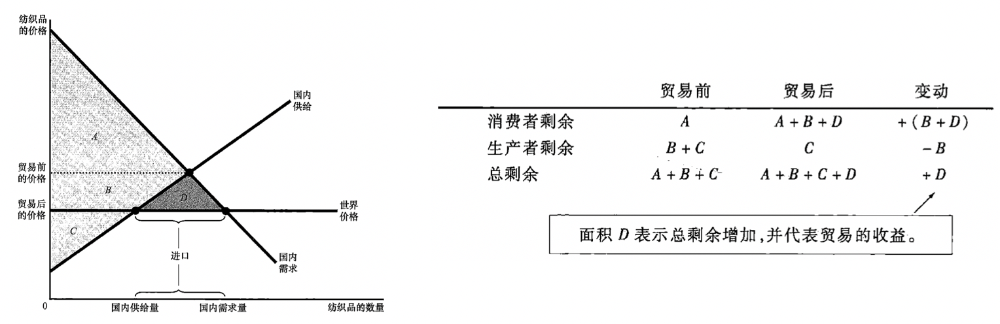
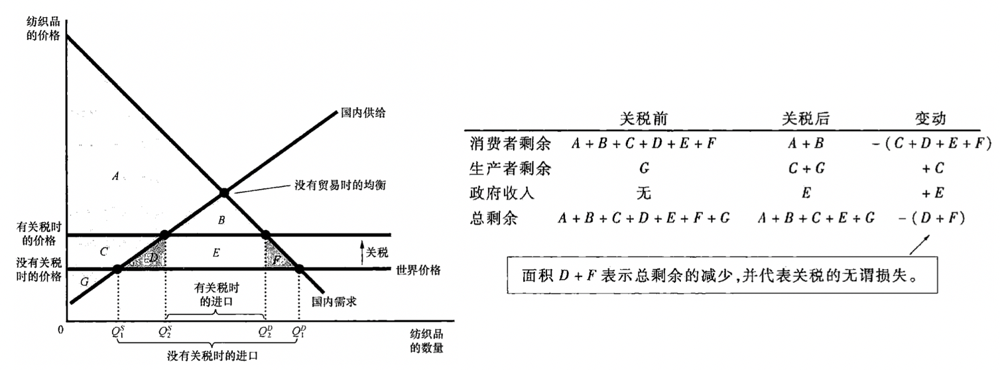

决定贸易的因素
比较优势原理说明，各国都可以从相互贸易中获益，因为贸易使每个国家都可以专门从事自己最擅长的活动。贸易的好处可以参考 贸易让每个人的状况都变得更好
那么在国际贸易中，各国之间的得失关系如何呢？
在没有国际贸易的时候，价格会在国家内部自发调整，使国内供给与需求达到平衡。当有国际贸易时，某一物品的价格会向该物品在世界上的价格（成为世界价格）发生变动，以纺织品为例
- 如果纺织品的世界价格高于国内价格，会促使该国成为纺织品出口国
- 如果纺织品的世界价格低于国内价格，会促使该国成为纺织品进口国
从本质上说，国内价格反映了纺织品在本国制造的机会成本，如果国内价格低，说明相比其他国家在成本上有比较优势，应该增加产量进行出口，相反，如果国内价格高，说明相比其他国家在成本上没有有比较优势，应该减少产量以将有限的资源进行其他经济活动，而依靠进口消费。
当然这一切的分析都基于单一国家对世界市场的影响是微不足道的假设，也就是说，单一国家是世界经济中的价格接受者。
贸易的赢家和输家
出口国的得失
在世界价格高于国内价格时，一旦允许自由贸易，国内价格就会上升到等于世界价格，此时国内的供给量就会大于国内的需求量，成为纺织品出口国。显然，出现国际贸易后，并不是每个人都能从中获利，贸易迫使国内价格上升，纺织品生产者的状况是变好了，但是消费者的状况却变差了，因为他们需要支付更高的价格才能获得以前等量的纺织品。
从消费者剩余和生产者剩余分别看造成的经济福利变化。如下图直观所示：

- 贸易前：消费者剩余是 A + B，生产者剩余是 C，总剩余是 A + B + C；
- 贸易后：消费者剩余是 A，生产者剩余是 B + C + D，总剩余是 A + B + C + D。
即：
- 当一国允许贸易并成为一种物品的出口国时，国内该物品的生产者的状况变好了，而国内该物品的消费者的状况变差了
- 从赢家收益大于输家损失的角度看，贸易使一国的经济福利变好了（增加了D）
进口国的得失
与出口国得失分析类似，允许贸易后，国内价格会下降到等于世界价格，国内的需求量会大于国内供给量，成为纺织品进口国。现在在该过程中，消费者的状况变好了，但是生产者的状况变差了。
从消费者剩余和生产者剩余分别看，同样如下图直观所示：

- 贸易前：消费者剩余是 A，生产者剩余是 B + C，总剩余是 A + B + C；
- 贸易后：消费者剩余是 A + B + D，生产者剩余是 C，总剩余是 A + B + C + D。
即
- 当一国允许贸易并成为一种物品的进口国时，国内该物品的消费者的状况变好了，而国内该物品的生产者的状况变差了
- 从赢家收益大于输家损失的角度看，贸易使一国的经济福利变好了（增加了D）
从进口和出口两个角度可以看到，贸易都增加了国家的总剩余，但是贸易并没有让国内每个人的状况都变好，因为不管进口还是出口都相应产生了赢家和输家，而且赢家的收益都大于输家的损失。换句话说，国际贸易做大了蛋糕规模，但却让一些经济参与者得到的蛋糕变小了。因此，为了保证相对公平，赢家可以对输家进行补偿，而这种补偿方案的制定，就酿造出了政治斗争。一些国家有时不能享受贸易的好处，就是因为自由贸易的输家在政治上比赢家更有组织力量。
关税
关税是对进口物品（国外生产，国内消费）征收的一种税。由于关税的存在，减少了进口量，并使国内市场向没有贸易时的均衡移动。因为关税提高了价格，国内卖者的状况变好了，但是买者的状况变差了。

同样以供需曲线看剩余情况。
- 征收关税前，消费者剩余是 A + B + C + D + E + F，生产者剩余是 G，总剩余是 A + B + C + D + E + F + G；
- 征收关税后，消费者剩余是 A + B，生产者剩余是 C + G，关税规模是 E，总剩余是 A + B + C + E + G。
征收关税后，市场总剩余减少了 D + F，这就是关税的无谓损失。
关税会导致无谓损失，是因为他和大部分的税一样，扭曲了激励，使稀缺资源配置背离了最优水平。关于税收扭曲激励可以参考文章 赋税的代价 。
国际贸易的其他好处
- 增加物品多样性：自由贸易使所有国家的消费者都拥有了更多的选择，从替代品的获得成本看，这进一步改善了消费者的状况。
- 通过规模经济降低了成本：如果一个小国的企业只在很小的国内市场销售产品，不能充分实现规模经济。
- 增加了竞争：避开外国竞争者的公司更可能拥有市场势力，这会导致市场失灵。
- 加强思想交流：技术进步在世界范围内的转移通常被认为是与含有这些技术进步的物品的国际贸易相关的，如对于贫困国家来说，了解电脑最好的方式就是购买一台电脑。
限制国际贸易的观点
- 工作岗位论：与其他国家贸易消灭了本国的一些工作岗位。
- 国家安全论：例如对于钢铁的自由贸易，国内钢铁公司就会指出，钢铁是用来生产枪炮和坦克的，如果依靠外国生产的钢铁，一旦爆发战争，外国的供给中断，本国将没有足够的钢铁和武器保护自己。
- 幼稚产业论：新兴产业认为，应实行暂时性限制贸易，以有助于该产业在国内的成长。加入一个产业是新兴的，暂时还不能与外国竞争者竞争，但是有理由相信，该产业在长期中是有利可图的。
- 讨价还价筹码的保护论：当与自己的贸易伙伴谈判时，贸易限制威胁有助于消除外国政府实施的贸易限制，如关税保护等。
一个有趣的调查
2008年《洛杉矶时报》公布了一个关于认为自由贸易对本国经济是有利还是有害的调查，有26%的民众认为有利，有50%的民众认为有害（另外的持不确定态度）。与此相比，大多数经济学家支持自由的国际贸易，他们认为自由贸易是一种有效配置生产的方法。
reference
经济学原理：微观经济学分册，曼昆，第7版，–北京大学出版社
完 ～